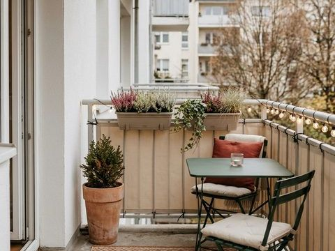
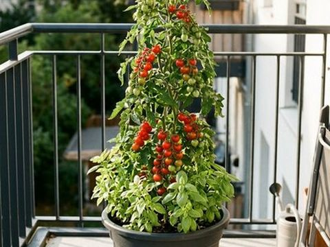
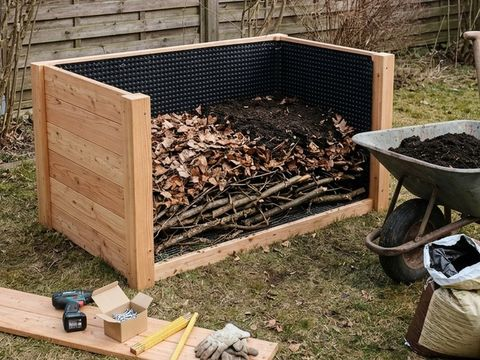
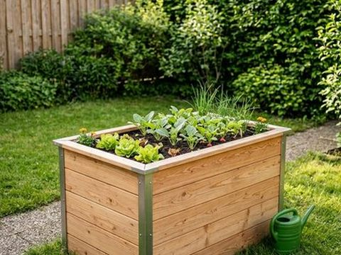
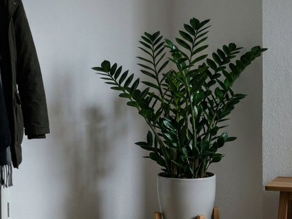
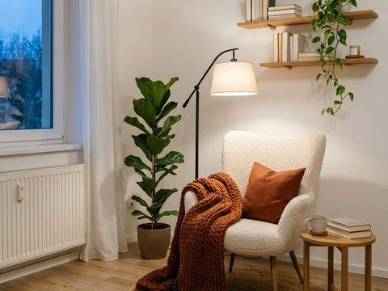

Kleine Räume, große Ideen
Realistische Ideen für kleine Balkone, Gärten und gemütliches Wohnen – mit Einkaufslisten und Kosten.
Mit KostenJede Idee mit Einkaufsliste und Preisrahmen.
Für MietwohnungenViele Ideen ohne Bohren und mit kleinem Budget.
Vorher/nachherVergleiche, die zeigen, was wirklich etwas bringt.
Balkon & Terrasse
14 Artikel
Kleine und schmale Balkone, Terrassen, Licht und Makeover

Lounge-Ecke für Balkon und Terrasse: 6 IdeenIdeen

Grauer Betonbalkon vorher/nachher: von Grau zu GrünMakeover

Balkon ohne Bohren: 8 Ideen für MietwohnungenIdeen

Klappmöbel für kleine Balkone: 3 LösungenVergleich

Balkonboden: Holzfliesen, Kunstrasen oder Teppich?Vergleich

Weihnachtsbalkon ab 50 €: Einkaufsliste & KostenWinter

Balkon-Beleuchtung: Solar, Strom oder Akku?Vergleich

Terrasse vorher/nachher: gemütlich in 7 SchrittenMakeover

Balkon-Makeover für 100 €: Einkaufsliste & KostenMakeover

Schmaler Balkon: 7 Ideen für eine Sitzecke unter 1 m TiefeIdeen

Sichtschutz für den Balkon: Stoff, Bambus oder Pflanzen?Vergleich

Kleiner Balkon vorher/nachher: Makeover in 8 SchrittenMakeover

Lichterketten auf dem Balkon: 6 Ideen mit Einkaufsliste & KostenWinter

Winterbalkon gemütlich machen: 10 Ideen mit Einkaufsliste & KostenWinter
Pflanzen & Garten
9 Artikel
Balkonpflanzen, Kräuter, Hochbeet und Gartenplanung

Tomaten auf dem Balkon: Kübel, Hochbeet oder Ampel?Vergleich

Hochbeet selber bauen ab 130 €Materialliste

Kleine Gartenecke vorher/nachher: ein Sitzplatz aus KiesMakeover

Gartenplanung im Winter: 10 Ideen fürs FrühjahrWinter

Vertikaler Garten auf dem Balkon: vorher/nachherMakeover

Kräutergarten auf dem Balkon ab 40 €Einkaufsliste

Hochbeet: Holz, Metall oder WPC?Vergleich

Balkonkästen fürs Frühjahr: jetzt Zwiebeln pflanzenFrühling

Winterharte Balkonpflanzen: 8 Arten, die Frost aushaltenWinter
Gemütlich wohnen
6 Artikel
Kleine Wohnzimmer, Licht, Farben und Pflanzen

Wohnzimmer-Makeover unter 300 €Einkaufsliste

Pflanzen für dunkle Ecken: 8 Zimmerpflanzen für wenig LichtPflanzen

Kleines Wohnzimmer gemütlich machen: 10 IdeenIdeen

Kleine Wohnung vorher/nachher: 7 Platzspar-Tricks fürs WohnzimmerMakeover

Hygge im Winter: 3 Lichtstimmungen im VergleichVergleich

Leseecke vorher/nachher: gemütliche Ecke in 6 SchrittenMakeover